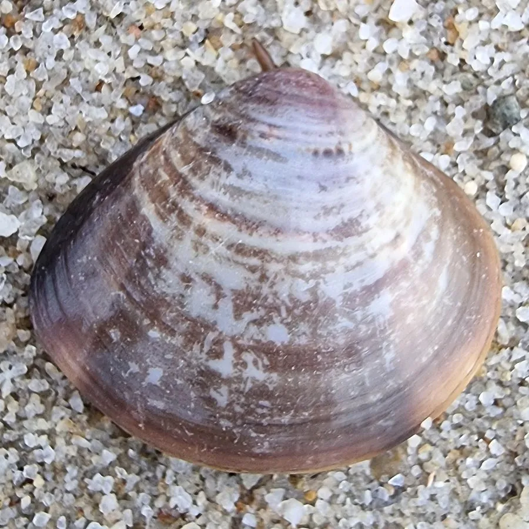

软体动物 · 动物界
文蛤 Meretrix meretrix

壳面光滑、带有褐色花纹的常见食用贝类，肉味鲜美，是中国沿海重要的养殖和采捕对象，民间有“天下第一鲜”之誉。
- 分类
- 门软体动物门纲双壳纲目帘蛤目科帘蛤科属文蛤属
- 栖息环境
- 潮间带中下区至浅海的沙滩和泥沙滩，靠斧足钻入沙中
- 地理分布
- 印度洋—西太平洋沿岸，中国黄海、东海和南海均有分布和养殖
- 保护级别
- 暂无评估；中国未列入国家重点保护野生动物名录（重要养殖贝类）
物种志
文蛤的贝壳呈三角形或卵圆形，壳质坚厚，表面光滑。壳色变化很大，有灰白、淡黄、棕褐等底色，常带锯齿状或波浪状的褐色花纹，因此得名“文蛤”。壳长一般 5–10 cm，壳内面白色，有的带淡紫色。
文蛤分布于印度洋—西太平洋的潮间带和浅海沙泥底质，中国黄海、东海和南海均有。它栖息于潮间带中下区至水深数米的沙滩和泥沙滩，靠斧足挖掘钻入沙中，退潮时只露出两根水管呼吸和滤食。文蛤是滤食性动物，靠水管吸入海水，过滤其中的浮游生物和有机颗粒。繁殖期在春夏季，雌雄异体，体外受精，幼体浮游一段时间后附着变态。文蛤肉质鲜美，在民间有“天下第一鲜”的美誉，是中国沿海重要的养殖和采捕贝类，常见的做法有爆炒、煮汤和炭烤。目前它没有IUCN 的正式评估，中国未将其列入国家重点保护野生动物名录。
形态与习性
- 食性滤食浮游生物和有机颗粒，靠水管吸水
- 壳长一般 5–10 cm
- 栖息环境潮间带中下区至浅海的沙滩和泥沙滩
- 繁殖春夏季繁殖，雌雄异体，体外受精
- 别名俗称蛤蜊、花蛤，民间有“天下第一鲜”之誉
- 习性靠斧足钻进沙中，退潮时只露出两根水管
趣味知识
- 文蛤壳面的褐色花纹像水墨画，因此得名“文蛤”。
- 它用斧足钻进沙里，退潮时只露出两根水管呼吸和滤食。
- 文蛤肉质鲜美，在民间有“天下第一鲜”的美誉。